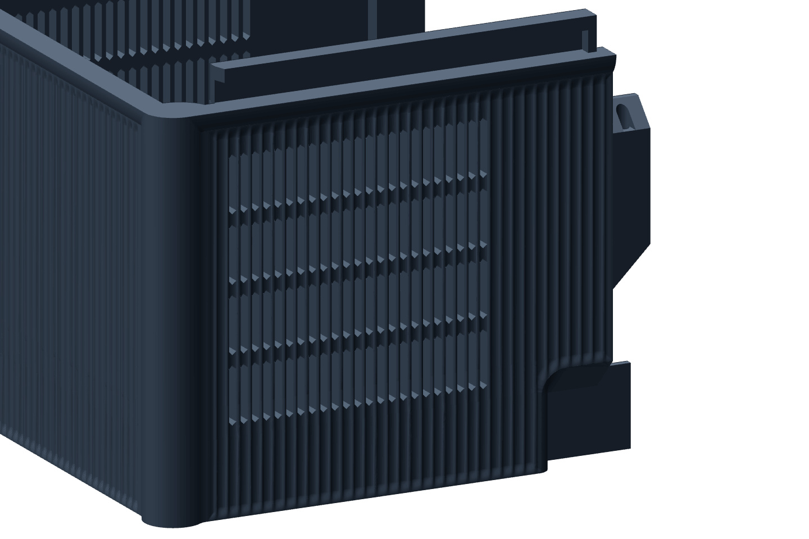
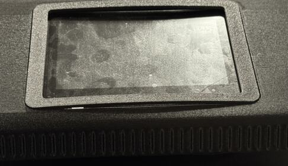

The skin
The skin is a printing decision.
The outside of the box is fluted from floor to roof. A printer draws each layer’s outline in one pass, so a groove that runs straight up is simply part of that outline, layer after layer. Turned sideways, the same groove is a row of ledges.
Seen in PET-GF · every quadrant printed since September 2026 · Mark 1 and Mark2 · left 0.4 mmNot tried in: the coupons that chose the groove were drawn for PETG

1223456FRONT-BOTTOM, EAST WALL
BUILD DIRECTION ↑
Flutes STRAIGHT UP
Half-round grooves every {{skin:/reeding/flute_pitch}} mm, running the way the part grows. Each layer’s outline simply has the grooves in it. Nothing overhangs and nothing steps.
Fades STRAIGHT UP
Every groove shallows to nothing before the bed, the seam above, an opening or a rounded corner. The first layer is a plain outline, and no groove meets an edge as a row of teeth.
Vent slots LEAN
A slot {{skin:/reeding/pierce_width}} mm wide is cut through the floor of each groove in front of the condenser’s fan. Seen from the side, the wall still reads as flutes.
Pointed ends LEAN
Each slot closes at the top and opens at the bottom on a 45° point, inside the groove’s own shadow. Nothing bridges.
Transoms STRAIGHT UP
Three bands are left unpierced. Every bar between two slots is tied to its neighbours instead of standing free for the height of the fan.
The seam STRAIGHT UP
The joint between the front and back pieces runs the full height of the wall. It lands in a groove, off its centre, in a shadow that is already there.

Four walls behind every groove
The slicer lays this wall as two loops inside and two outside, {{skin:/reeding/pierce_shell}} mm in all. A groove may take only what leaves all four. Whatever disturbs those loops from behind shows on the outside. On 11 October 2026 a back-top came off Mark 1 with lengths of flute missing, each opposite a screw pad that the slicer had been told to reinforce with extra walls.
“…a bunch of features from the interior side have resulted in parts of the flutes cut off, like different lengths of vertical lines removed from the exterior surface…”
Reinforcement now changes infill only, and nothing inside the box is cut into the back of a fluted wall.
Still openThe bars between slots and the wall under a groove are the thinnest sections on the box. Both were approved as drawn on 21 October 2026. No one has yet written down how the vent printed, or whether the missing flutes came back.